own-the-loop · 进度与文档
把 loop 织起来的机器
loom 是 agent-farm 的 v2 重建：自己写 agent 循环，而不是租一个 SDK 的。 换心不拆楼——核心逐层自建、真机验证，每一步都先讲原理再写代码。 这是一个教学项目，下面是它长出来的过程。
2/6
核心组件已建成
30
测试全绿 · 14+16
2
层真机验证
v4
DeepSeek flash 打通
01
当前进度
按组件、不按里程碑——M1 里程碑要等 host 打通飞书链路才算达成。 绿框内是已建成并真机验证的部分。

- ① complete() wire 契约 + SSE 解析 + transport，一次请求不重试 已建成 · 真机
- ② loop agent 循环 + 构造式边界 + 审批原语，纯逻辑可测 已建成 · 真机
- grants 构造式门控逻辑已在 ② 实现；飞书审批卡渲染待接 部分 · M3
- host 进程壳：把这套通过 HTTP/SSE 暴露给 dispatch 待建 · M1 收尾
- agent home 文件优先聚合根 + 两级记忆（core.md + FTS）落盘 待建 · M2
- dispatch 外壳移植（飞书层 / 审批流）+ 绞杀迁移 待建 · M4–M5
02
过程与文档
沿时间轴排列——这条轴就是 loom 的经线，每份文档是织上去的一道纬。从奠基到当前进度。
进度图
当前完成度
此页本页顶部那张图——组件视角，绿框＝已建成。下一份文档会是 host 打通飞书链路的 M1 收尾记录。